Publier accessible sur les réseaux sociaux
Présentation - Publier accessible sur les réseaux sociaux
Slide 1 sur 38 - Accessibilité des réseaux sociaux
Slide 1 - Accessibilité des réseaux sociaux
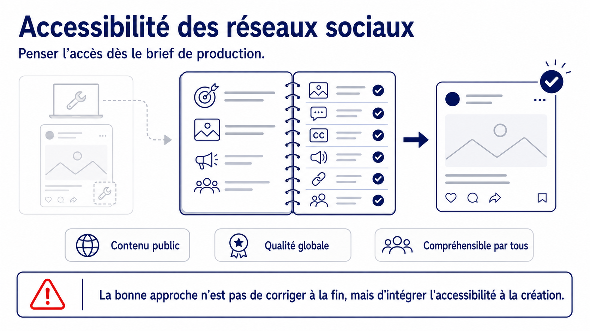
La slide d'ouverture montre un brief de production et un storyboard qui intègrent l'accessibilité dès le départ. Elle oppose l'idée de correction tardive à une intégration dans la création.
Textes visibles
- Accessibilité des réseaux sociaux
- Penser l'accès dès le brief de production.
- Contenu public
- Qualité globale
- Compréhensible par tous
- La bonne approche n'est pas de corriger à la fin, mais d'intégrer l'accessibilité à la création.
Message à retenir
L'accessibilité des publications sociales doit être pensée dès le brief de production, comme une exigence de qualité globale.
Slide 2 - Le parcours d'un post accessible
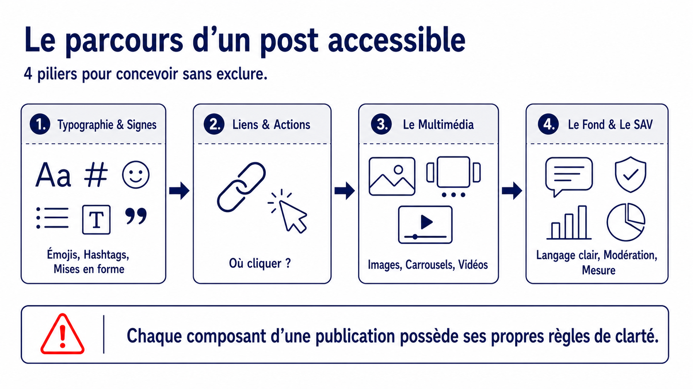
La slide présente une frise en quatre piliers : typographie et signes, liens et actions, multimédia, puis fond et service après-vente.
Textes visibles
- Le parcours d'un post accessible
- 4 piliers pour concevoir sans exclure.
- 1. Typographie & Signes
- Émojis, Hashtags, Mises en forme
- 2. Liens & Actions
- Où cliquer ?
- 3. Le Multimédia
- Images, Carrousels, Vidéos
- 4. Le Fond & Le SAV
- Langage clair, Modération, Mesure
- Chaque composant d'une publication possède ses propres règles de clarté.
Message à retenir
Un post accessible se conçoit composant par composant : texte, actions, multimédia, fond et suivi après publication.
Slide 3 - Communiquer sans exclure
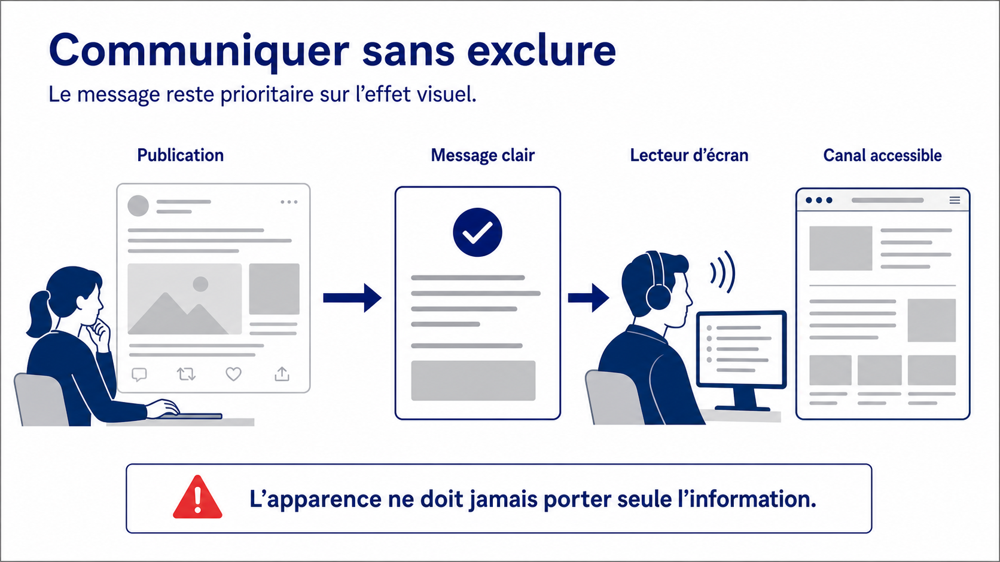
La slide montre une publication transformée en message clair, puis restituée par un lecteur d'écran et reprise dans un canal accessible. Le parcours illustre qu'une publication doit rester compréhensible quand l'effet visuel disparaît.
Textes visibles
- Communiquer sans exclure
- Le message reste prioritaire sur l'effet visuel.
- Publication
- Message clair
- Lecteur d'écran
- Canal accessible
- L'apparence ne doit jamais porter seule l'information.
Message à retenir
Une publication sociale reste accessible quand l'information principale est portée par un message clair, pas seulement par son apparence.
Slide 4 - Un émoji est aussi vocalisé
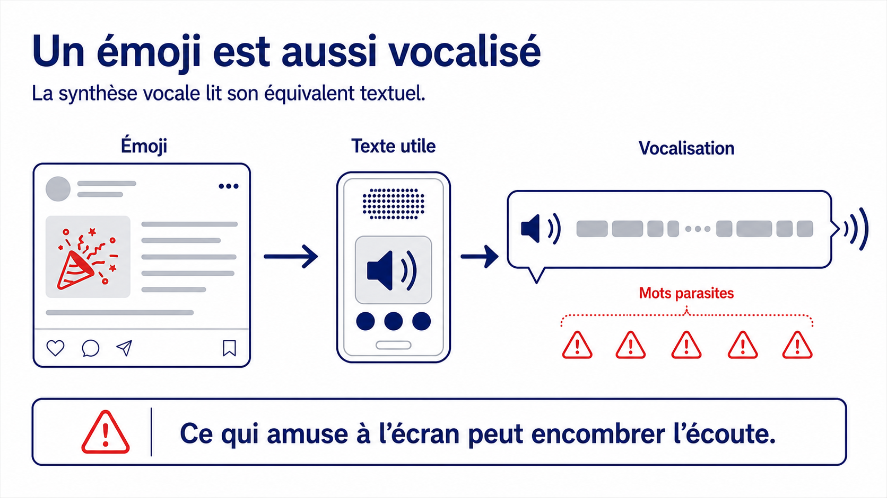
La slide représente une publication avec un émoji, puis une sortie audio de lecteur d'écran. Elle montre qu'un signe visuel peut devenir des mots vocalisés et ajouter du bruit à l'écoute.
Textes visibles
- Un émoji est aussi vocalisé
- La synthèse vocale lit son équivalent textuel.
- Émoji
- Texte utile
- Vocalisation
- Mots parasites
- Ce qui amuse à l'écran peut encombrer l'écoute.
Message à retenir
Avant de publier, il faut se demander comment l'émoji sera restitué par un lecteur d'écran ou une autre technologie d'assistance.
Slide 5 - Un seul émoji suffit
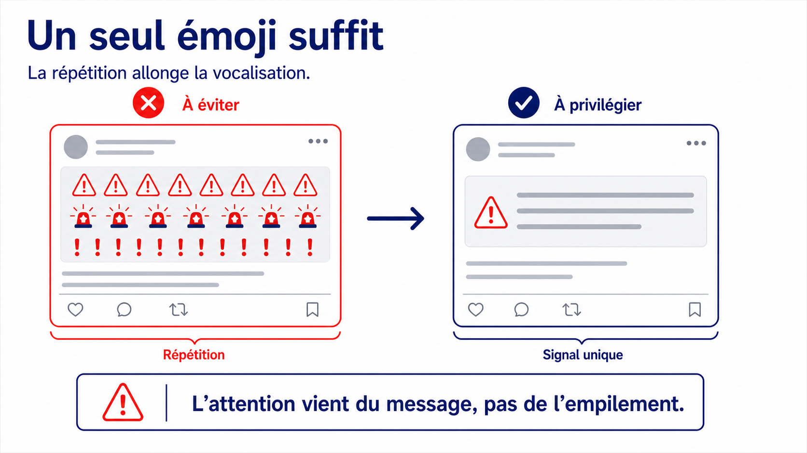
La slide compare une publication qui empile les signes et une publication qui garde un seul signal. La version répétée est marquée comme à éviter, tandis que le signal unique laisse le message lisible.
Textes visibles
- Un seul émoji suffit
- La répétition allonge la vocalisation.
- À éviter
- Répétition
- À privilégier
- Signal unique
- L'attention vient du message, pas de l'empilement.
Message à retenir
Répéter le même émoji n'ajoute pas d'information utile et peut rendre la vocalisation longue ou confuse.
Slide 6 - Garder les mots et chiffres en texte
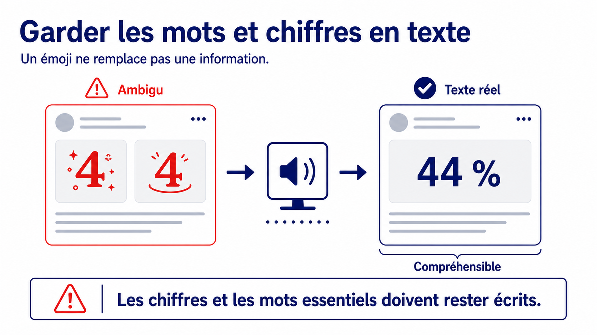
La slide oppose un chiffre ambigu à une valeur écrite clairement en texte réel. Elle rappelle que les chiffres, les mots clés et les consignes ne doivent pas être remplacés par des symboles.
Textes visibles
- Garder les mots et chiffres en texte
- Un émoji ne remplace pas une information.
- Ambigu
- 44 %
- Texte réel
- Compréhensible
- Les chiffres et les mots essentiels doivent rester écrits.
Message à retenir
Les mots et les chiffres essentiels doivent rester écrits en texte réel, car un symbole peut être ambigu ou mal vocalisé.
Slide 7 - Placer l'émoji après le message
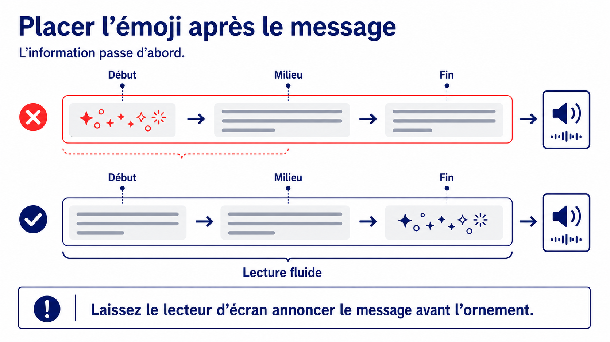
La slide compare deux chronologies de lecture. La première commence par l'ornement et ralentit l'accès au message ; la seconde commence par l'information utile et place l'ornement à la fin.
Textes visibles
- Placer l'émoji après le message
- L'information passe d'abord.
- Début
- Milieu
- Fin
- Lecture fluide
- Laissez le lecteur d'écran annoncer le message avant l'ornement.
Message à retenir
Quand un émoji est utile, le placer après l'information permet d'entendre le message avant l'ornement.
Slide 8 - Ce n'est pas du style
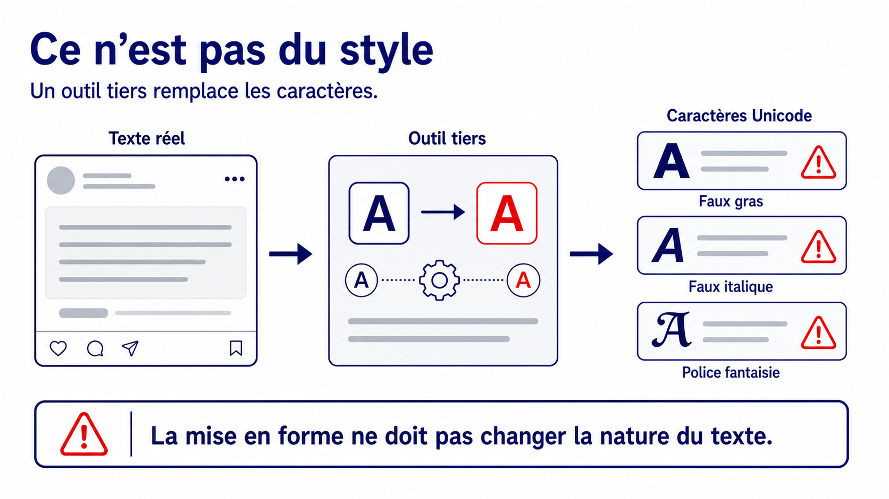
La slide montre un texte réel transformé par un outil tiers en faux gras, faux italique et police fantaisie. Elle explique que ces effets ne sont pas une vraie mise en forme, mais un remplacement de caractères Unicode.
Textes visibles
- Ce n'est pas du style
- Un outil tiers remplace les caractères.
- Texte réel
- Outil tiers
- Faux gras
- Faux italique
- Police fantaisie
- Caractères Unicode
- La mise en forme ne doit pas changer la nature du texte.
Message à retenir
Le faux gras, le faux italique et les polices fantaisie détournent les caractères au lieu d'appliquer une vraie mise en forme.
Slide 9 - Le lecteur d'écran perd le mot
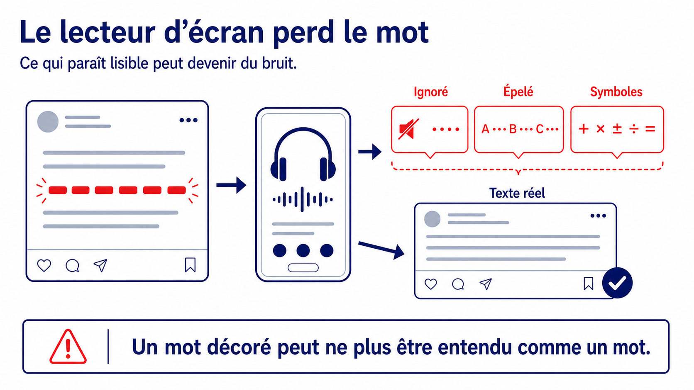
La slide montre une publication passant dans un lecteur d'écran. La sortie peut être ignorée, épelée ou restituée comme des symboles, puis une version en texte réel rétablit le mot.
Textes visibles
- Le lecteur d'écran perd le mot
- Ce qui paraît lisible peut devenir du bruit.
- Ignoré
- Épelé
- Symboles
- Texte réel
- Un mot décoré peut ne plus être entendu comme un mot.
Message à retenir
Un mot décoré avec des caractères détournés peut ne plus être compris comme un mot par les technologies d'assistance.
Slide 10 - Les outils ne suivent plus
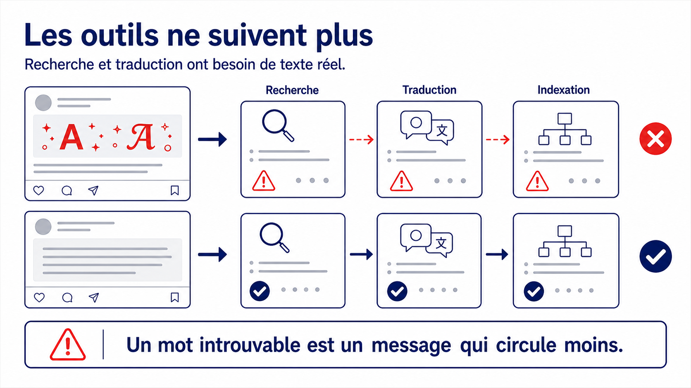
La slide compare un mot en faux style et le même mot en texte réel face à trois outils : recherche, traduction et indexation. Les caractères détournés perturbent les outils, tandis que le texte réel circule correctement.
Textes visibles
- Les outils ne suivent plus
- Recherche et traduction ont besoin de texte réel.
- Recherche
- Traduction
- Indexation
- Texte réel
- Un mot introuvable est un message qui circule moins.
Message à retenir
Les caractères détournés peuvent gêner la recherche, la traduction automatique et l'indexation des publications.
Slide 11 - Bannir les faux décors de texte
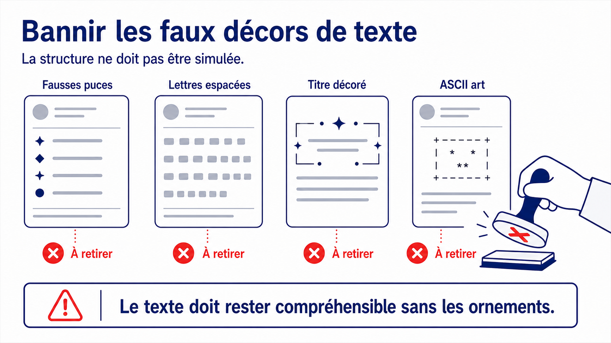
La slide présente quatre cartes de mauvaises pratiques à retirer : fausses puces, lettres espacées, titre décoré et ASCII art. Elle rappelle que la structure du message ne doit pas être simulée par des ornements.
Textes visibles
- Bannir les faux décors de texte
- La structure ne doit pas être simulée.
- Fausses puces
- Lettres espacées
- Titre décoré
- ASCII art
- À retirer
- Le texte doit rester compréhensible sans les ornements.
Message à retenir
Les signes décoratifs ne doivent pas porter la structure du message : le texte doit rester compréhensible sans eux.
Slide 12 - Linéariser les faux tableaux
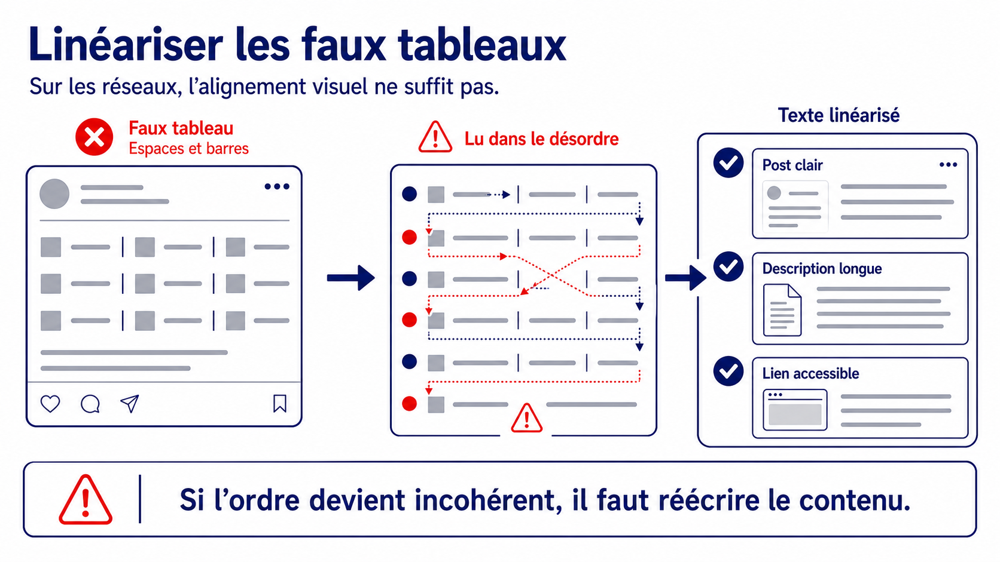
La slide montre un faux tableau créé avec des espaces et des barres, puis une lecture dans le désordre. La solution proposée est de réécrire le contenu en post clair, avec une description longue ou un lien accessible si les données sont denses.
Textes visibles
- Linéariser les faux tableaux
- Sur les réseaux, l'alignement visuel ne suffit pas.
- Faux tableau
- Espaces et barres
- Lu dans le désordre
- Texte linéarisé
- Post clair
- Description longue
- Lien accessible
- Si l'ordre devient incohérent, il faut réécrire le contenu.
Message à retenir
Un faux tableau ou une fausse colonne doit être réécrit en texte linéaire, ou renvoyer vers un support accessible quand les données sont trop denses.
Slide 13 - Checklist émojis
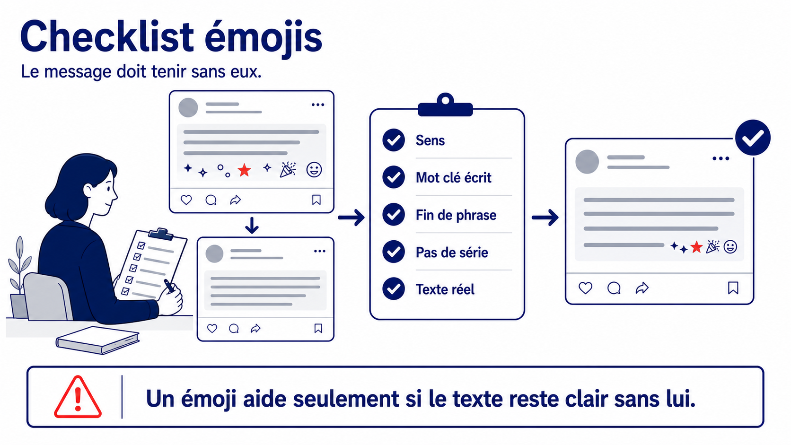
La slide montre une publication relue avec une checklist. Les contrôles portent sur le sens du message, les mots clés écrits, la position en fin de phrase, l'absence de série et le maintien du texte réel.
Textes visibles
- Checklist émojis
- Le message doit tenir sans eux.
- Sens
- Mot clé écrit
- Fin de phrase
- Pas de série
- Texte réel
- Un émoji aide seulement si le texte reste clair sans lui.
Message à retenir
Un émoji peut aider visuellement, mais il ne doit jamais remplacer le sens, les mots clés, les chiffres ou la consigne.
Slide 14 - Checklist caractères spéciaux
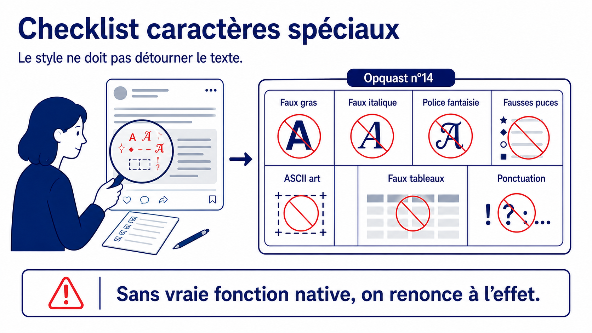
La slide montre une personne inspectant une publication et plusieurs pièges barrés : faux gras, faux italique, police fantaisie, fausses puces, ASCII art, faux tableaux et ponctuation excessive. Elle s'appuie sur la règle Opquast n°14.
Textes visibles
- Checklist caractères spéciaux
- Le style ne doit pas détourner le texte.
- Opquast n°14
- Faux gras
- Faux italique
- Police fantaisie
- Fausses puces
- ASCII art
- Faux tableaux
- Ponctuation
- Sans vraie fonction native, on renonce à l'effet.
Message à retenir
Sans vraie fonction native, il faut renoncer aux effets visuels qui détournent les caractères ; pour les listes, privilégier les tirets standards, les numéros et le texte réel.
Slide 15 - Relire avant de publier
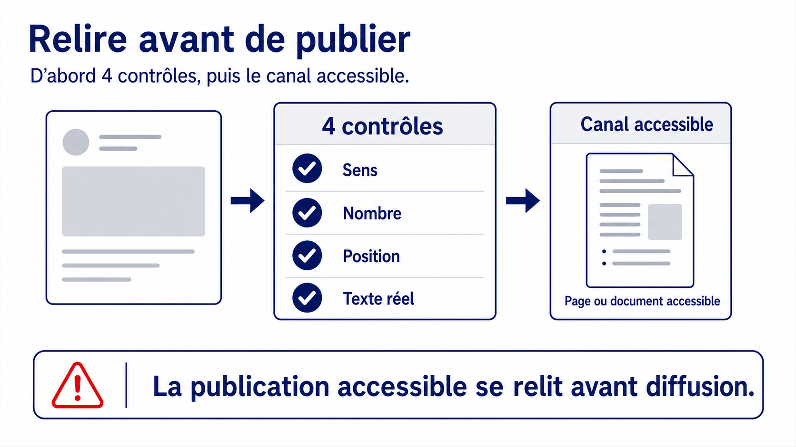
La slide montre une publication prête, un bloc de quatre contrôles et un bloc séparé de canal accessible. Les quatre contrôles sont le sens, le nombre, la position et le texte réel ; le canal accessible est une page ou un document accessible après relecture.
Textes visibles
- Relire avant de publier
- D'abord 4 contrôles, puis le canal accessible.
- 4 contrôles
- Sens
- Nombre
- Position
- Texte réel
- Canal accessible
- Page ou document accessible
- La publication accessible se relit avant diffusion.
Message à retenir
Avant diffusion, relire la publication avec quatre contrôles simples, puis vérifier que l'information importante existe aussi sur un support accessible.
Slide 16 - Placer le lien dans le post
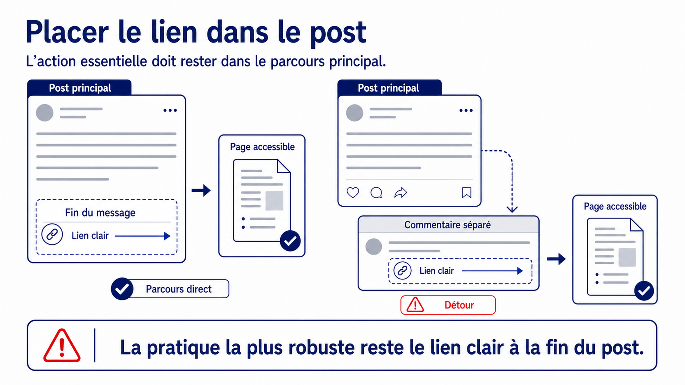
La slide compare deux parcours. À gauche, le lien clair reste à la fin du post principal et mène directement vers une page accessible. À droite, le lien est déplacé dans un commentaire séparé, ce qui ajoute un détour.
Textes visibles
- Placer le lien dans le post
- L'action essentielle doit rester dans le parcours principal.
- Post principal
- Fin du message
- Lien clair
- Parcours direct
- Commentaire séparé
- Détour
- Page accessible
- La pratique la plus robuste reste le lien clair à la fin du post.
Message à retenir
Le lien le plus robuste est celui qui reste clairement intégré au post principal, idéalement à la fin du message.
Slide 17 - Le commentaire ajoute un détour
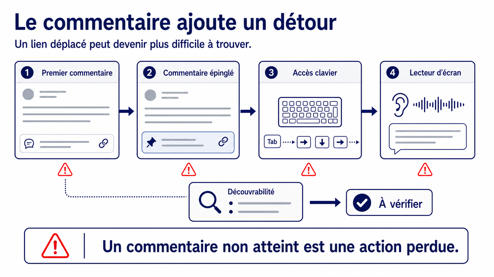
La slide montre les points de vigilance quand le lien est déplacé en premier commentaire : commentaire épinglé, accès clavier, lecteur d'écran et découvrabilité. Chaque étape est à vérifier sur la plateforme.
Textes visibles
- Le commentaire ajoute un détour
- Un lien déplacé peut devenir plus difficile à trouver.
- Premier commentaire
- Commentaire épinglé
- Accès clavier
- Lecteur d'écran
- Découvrabilité
- À vérifier
- Un commentaire non atteint est une action perdue.
Message à retenir
Un lien en commentaire peut être utilisé seulement si le commentaire reste atteignable, lisible, épinglé quand c'est possible et réellement trouvable.
Slide 18 - Écrire l'action explicitement
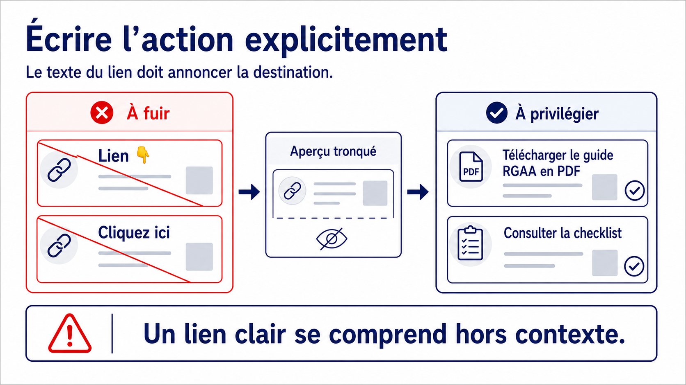
La slide oppose des formulations vagues comme Lien ou Cliquez ici à des libellés explicites. Elle rappelle que l'aperçu automatique peut être tronqué et que le texte du lien doit annoncer la destination.
Textes visibles
- Écrire l'action explicitement
- Le texte du lien doit annoncer la destination.
- À fuir
- Lien 👇
- Cliquez ici
- Aperçu tronqué
- À privilégier
- Télécharger le guide RGAA en PDF
- Consulter la checklist
- Un lien clair se comprend hors contexte.
Message à retenir
Le texte d'appel à l'action doit dire ce que l'utilisateur va obtenir ou consulter, même si l'aperçu ou l'URL sont masqués.
Slide 19 - Utiliser le commentaire en réparation
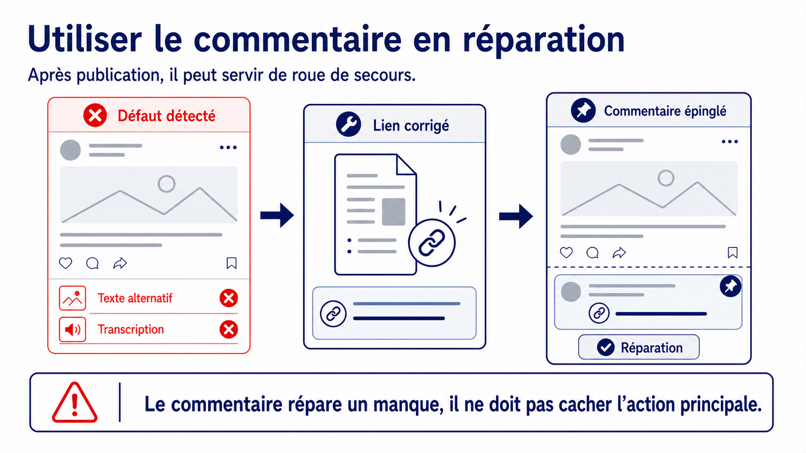
La slide montre un post déjà publié avec un défaut d'accessibilité : texte alternatif ou transcription manquants. Le commentaire sert alors à publier le lien corrigé ou l'alternative et à l'épingler si la plateforme le permet.
Textes visibles
- Utiliser le commentaire en réparation
- Après publication, il peut servir de roue de secours.
- Défaut détecté
- Texte alternatif
- Transcription
- Lien corrigé
- Commentaire épinglé
- Réparation
- Le commentaire répare un manque, il ne doit pas cacher l'action principale.
Message à retenir
Le commentaire est pertinent comme roue de secours après publication quand la plateforme empêche de corriger directement le post.
Slide 20 - Écrire les hashtags en mots lisibles
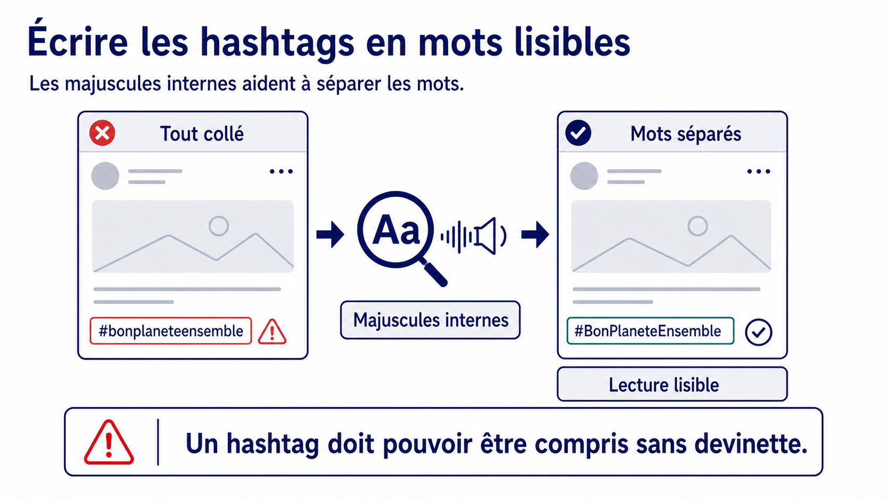
La slide compare deux publications. À gauche, un hashtag écrit tout collé est marqué comme difficile à lire. À droite, le même hashtag utilise des majuscules internes pour séparer les mots et rendre la lecture plus claire.
Textes visibles
- Écrire les hashtags en mots lisibles
- Les majuscules internes aident à séparer les mots.
- Tout collé
- Mots séparés
- Majuscules internes
- Lecture lisible
- #bonplaneteensemble
- #BonPlaneteEnsemble
- Un hashtag doit pouvoir être compris sans devinette.
Message à retenir
Un hashtag reste du texte : les majuscules internes aident à distinguer les mots et à éviter la devinette.
Slide 21 - Garder peu de hashtags
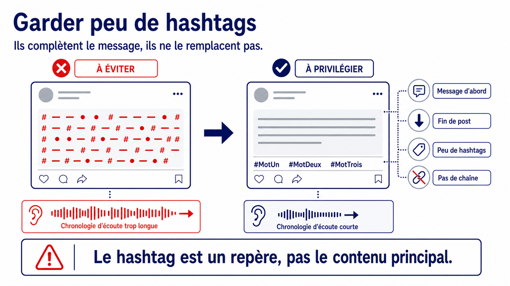
La slide oppose une publication à éviter, remplie de marques de hashtags abstraites, et une publication à privilégier. Dans la version corrigée, le message arrive d'abord, puis quelques hashtags lisibles en CamelCase sont placés en fin de post.
Textes visibles
- Garder peu de hashtags
- Ils complètent le message, ils ne le remplacent pas.
- À ÉVITER
- À PRIVILÉGIER
- Message d'abord
- Fin de post
- Peu de hashtags
- Pas de chaîne
- #MotUn
- #MotDeux
- #MotTrois
- Chronologie d'écoute trop longue
- Chronologie d'écoute courte
- Le hashtag est un repère, pas le contenu principal.
Message à retenir
Les hashtags complètent le message : ils doivent rester peu nombreux, lisibles et placés après le contenu principal.
Slide 22 - Faire des listes accessibles
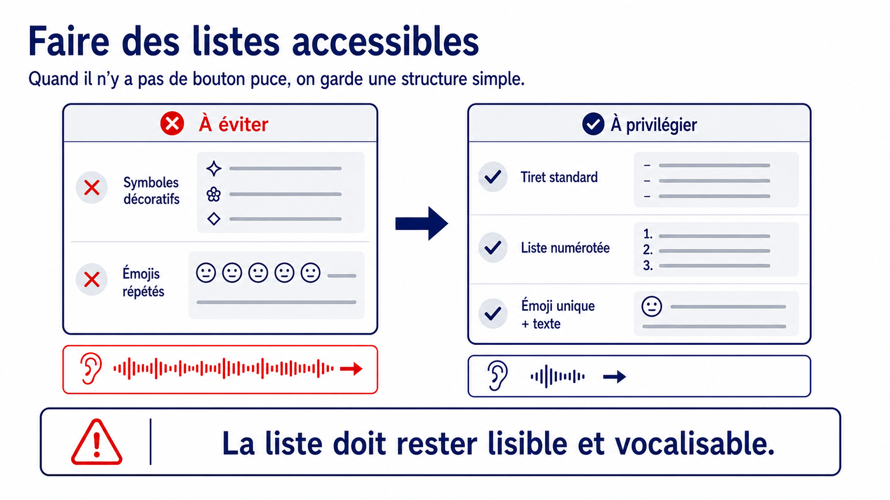
La slide compare deux manières de structurer une liste. À gauche, les symboles décoratifs et les émojis répétés sont marqués comme à éviter. À droite, les options à privilégier sont le tiret standard, la liste numérotée et un émoji unique accompagné de texte.
Textes visibles
- Faire des listes accessibles
- Quand il n'y a pas de bouton puce, on garde une structure simple.
- À éviter
- Symboles décoratifs
- Émojis répétés
- À privilégier
- Tiret standard
- Liste numérotée
- Émoji unique + texte
- La liste doit rester lisible et vocalisable.
Message à retenir
Sur les réseaux, une liste accessible peut utiliser un tiret standard, une numérotation ou un émoji unique accompagné d'un texte réel.
Slide 23 - Calmer la ponctuation bruyante
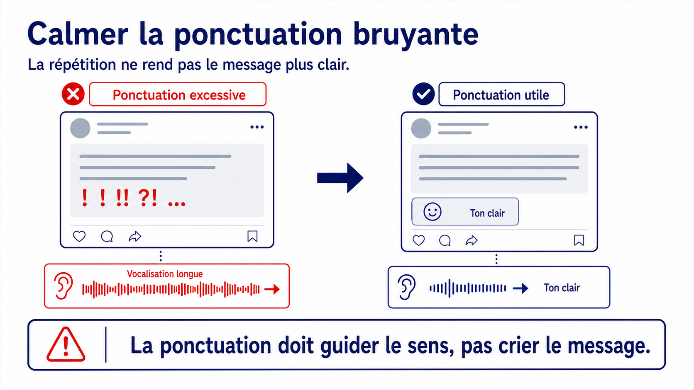
La slide compare une publication avec ponctuation excessive et une publication corrigée. L'excès produit une vocalisation longue, tandis qu'une ponctuation utile et un ton clair guident mieux la lecture.
Textes visibles
- Calmer la ponctuation bruyante
- La répétition ne rend pas le message plus clair.
- Ponctuation excessive
- Vocalisation longue
- Ponctuation utile
- Ton clair
- La ponctuation doit guider le sens, pas crier le message.
Message à retenir
La ponctuation répétée ajoute du bruit sans clarifier le message ; une formulation claire et une ponctuation sobre sont plus accessibles.
Slide 24 - Proscrire les séries bruyantes
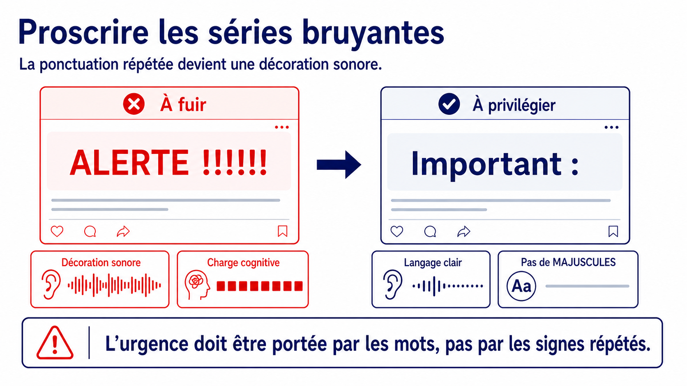
La slide montre un avant-après. À gauche, ALERTE en majuscules et suivi de plusieurs points d'exclamation est présenté comme à fuir, avec décoration sonore et charge cognitive. À droite, Important suivi de deux-points est présenté comme langage clair.
Textes visibles
- Proscrire les séries bruyantes
- La ponctuation répétée devient une décoration sonore.
- À fuir
- ALERTE !!!!!!
- Décoration sonore
- Charge cognitive
- À privilégier
- Important :
- Langage clair
- Pas de MAJUSCULES
- L'urgence doit être portée par les mots, pas par les signes répétés.
Message à retenir
Les séries de ponctuation comme !!! ou ??? doivent être proscrites : l'urgence doit être portée par des mots clairs, pas par des signes répétés.
Slide 25 - Contrôler les signes avant publication
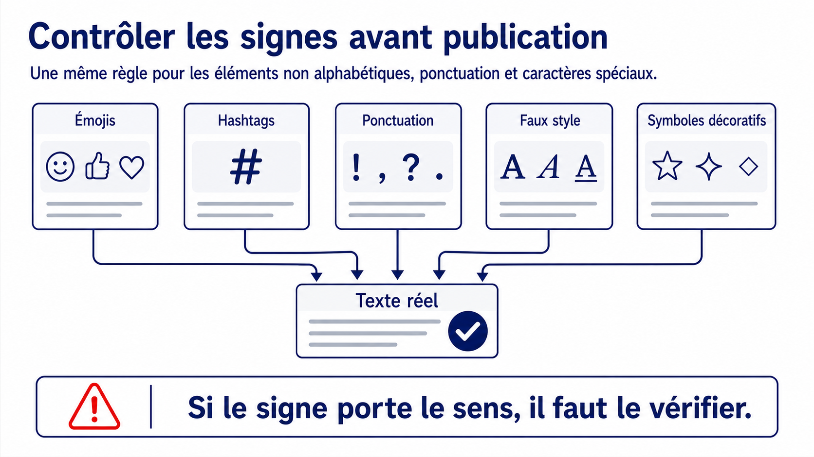
La slide rassemble les familles de signes à contrôler avant publication : émojis, hashtags, ponctuation, faux style et symboles décoratifs. Elles convergent vers une carte de validation qui rappelle l'objectif de texte réel.
Textes visibles
- Contrôler les signes avant publication
- Une même règle pour les éléments non alphabétiques, ponctuation et caractères spéciaux.
- Émojis
- Hashtags
- Ponctuation
- Faux style
- Symboles décoratifs
- Texte réel
- Si le signe porte le sens, il faut le vérifier.
Message à retenir
Émojis, hashtags, ponctuation et caractères spéciaux doivent être relus ensemble dès qu'ils portent du sens ou simulent une structure.
Slide 26 - Rendre l'image décorative silencieuse
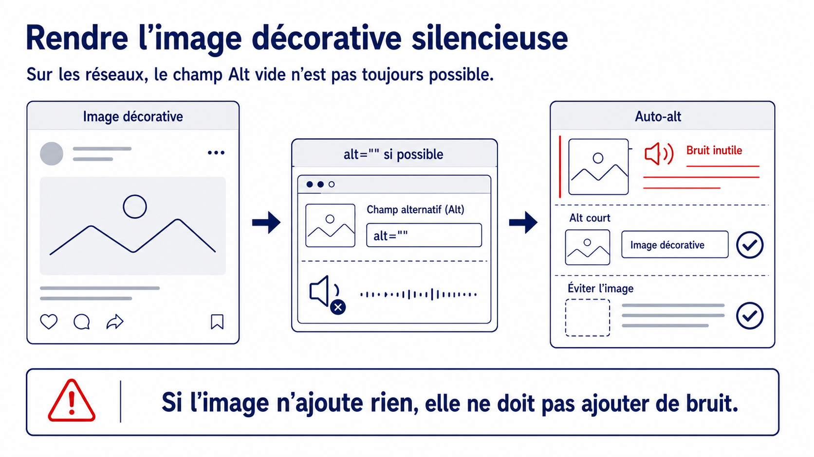
La slide montre une image décorative, un champ alternatif vide quand il est possible et le risque d'un auto-alt bruyant sur les réseaux. Elle propose un alt court ou l'évitement de l'image quand elle n'ajoute aucune information.
Textes visibles
- Rendre l'image décorative silencieuse
- Sur les réseaux, le champ Alt vide n'est pas toujours possible.
- Image décorative
- alt="" si possible
- Auto-alt
- Bruit inutile
- Alt court
- Éviter l'image
- Si l'image n'ajoute rien, elle ne doit pas ajouter de bruit.
Message à retenir
Une image purement décorative doit rester silencieuse si la plateforme le permet ; sinon, l'alt doit rester très bref ou l'image doit être évitée.
Slide 27 - Décrire l'image informative
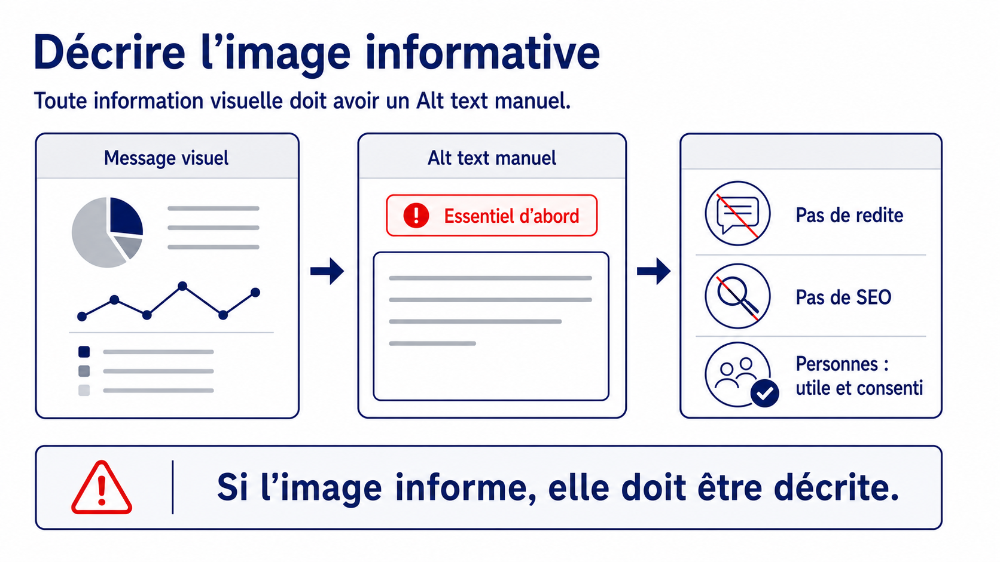
La slide montre une image informative abstraite, un champ Alt text manuel et trois règles de rédaction : aller à l'essentiel, éviter les redites, ne pas utiliser le champ pour le SEO et ne décrire les personnes que si c'est utile et consenti.
Textes visibles
- Décrire l'image informative
- Toute information visuelle doit avoir un Alt text manuel.
- Message visuel
- Alt text manuel
- Essentiel d'abord
- Pas de redite
- Pas de SEO
- Personnes : utile et consenti
- Si l'image informe, elle doit être décrite.
Message à retenir
Toute image porteuse d'information doit avoir une alternative textuelle manuelle qui transmet l'information utile sans redite ni mots-clés SEO.
Slide 28 - Retaper le texte incrusté
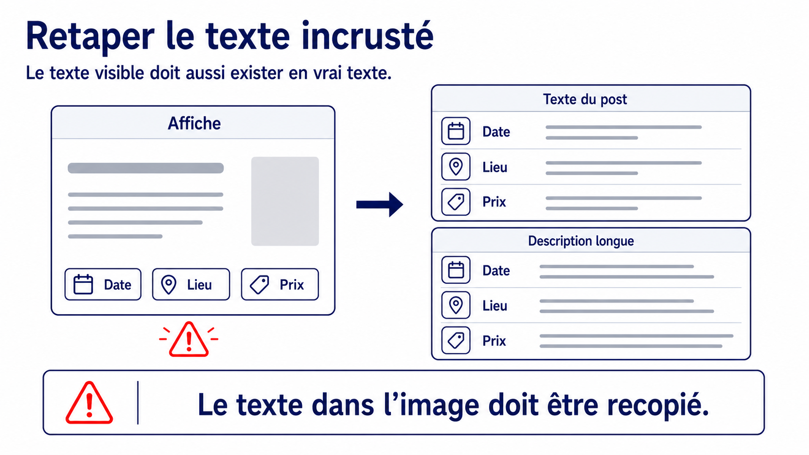
La slide montre une affiche qui contient des informations visibles, puis les mêmes éléments recopiés dans le texte du post et dans une description longue. Elle rappelle que le texte dans l'image ne doit pas être le seul accès à l'information.
Textes visibles
- Retaper le texte incrusté
- Le texte visible doit aussi exister en vrai texte.
- Affiche
- Date
- Lieu
- Prix
- Texte du post
- Description longue
- Le texte dans l'image doit être recopié.
Message à retenir
Si une image contient du texte utile, ce texte doit aussi être repris en texte réel dans la publication ou dans une description longue.
Slide 29 - Prévoir une description longue
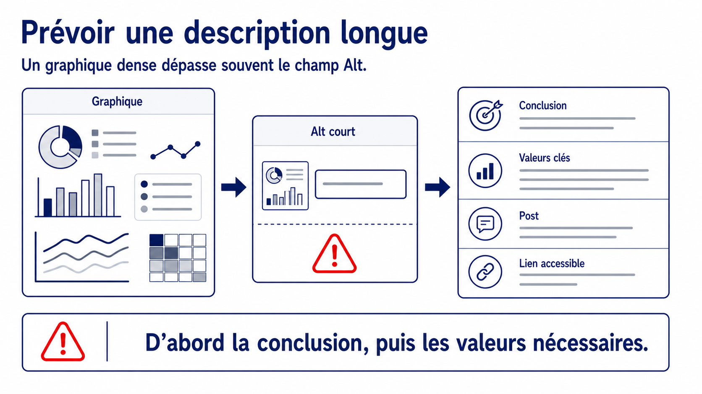
La slide montre un graphique dense, un alt court insuffisant pour tout contenir, puis une description structurée avec conclusion, valeurs clés, post et lien accessible.
Textes visibles
- Prévoir une description longue
- Un graphique dense dépasse souvent le champ Alt.
- Graphique
- Alt court
- Conclusion
- Valeurs clés
- Post
- Lien accessible
- D'abord la conclusion, puis les valeurs nécessaires.
Message à retenir
Pour une infographie ou un graphique dense, l'alt court oriente vers une description longue qui donne d'abord la conclusion puis les valeurs utiles.
Slide 30 - Fournir une version texte des carrousels
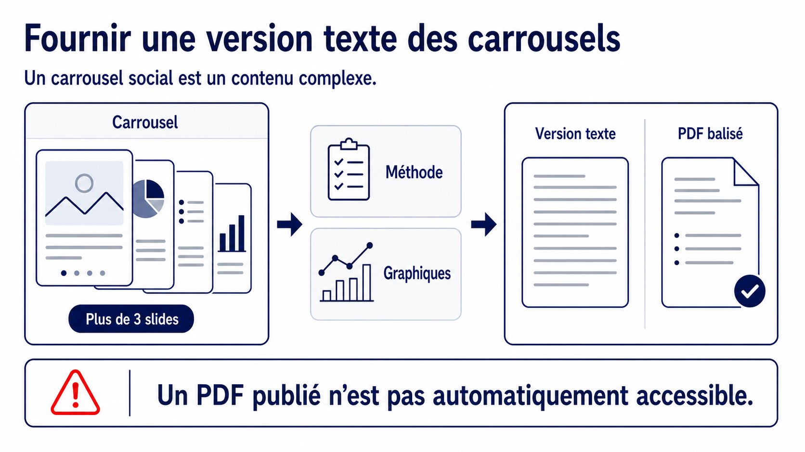
La slide montre un carrousel contenant méthode et graphiques, puis une version texte et un PDF balisé. Elle rappelle qu'un PDF publié n'est pas automatiquement accessible.
Textes visibles
- Fournir une version texte des carrousels
- Un carrousel social est un contenu complexe.
- Carrousel
- Plus de 3 slides
- Méthode
- Graphiques
- Version texte
- PDF balisé
- Un PDF publié n'est pas automatiquement accessible.
Message à retenir
Un carrousel informatif ou un PDF doit avoir une version texte complète, surtout s'il contient une méthode, des graphiques ou plusieurs écrans.
Slide 31 - Relire les sous-titres automatiques
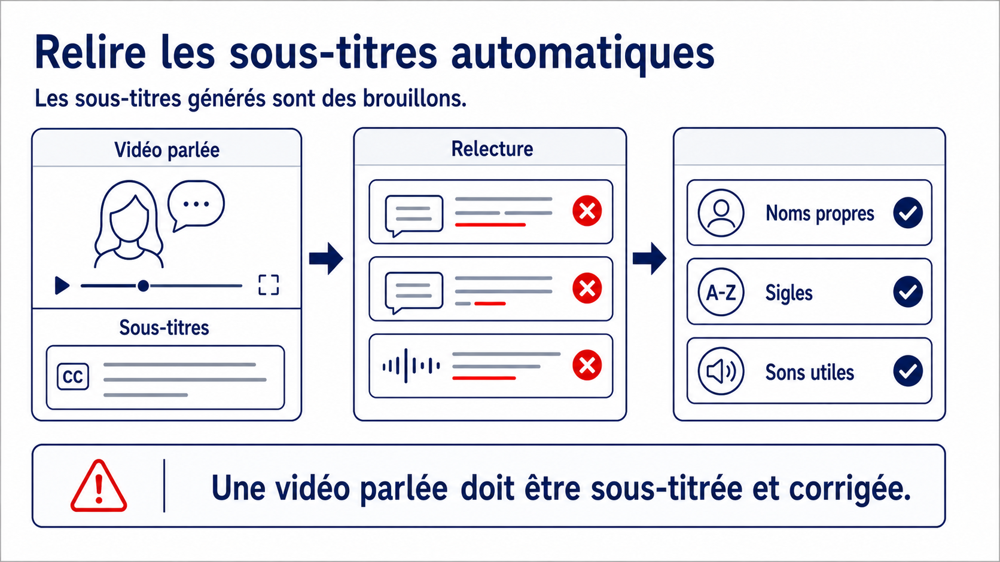
La slide montre une vidéo parlée, des sous-titres automatiques en brouillon et une relecture qui corrige les noms propres, les sigles et les sons utiles.
Textes visibles
- Relire les sous-titres automatiques
- Les sous-titres générés sont des brouillons.
- Vidéo parlée
- Sous-titres
- Relecture
- Noms propres
- Sigles
- Sons utiles
- Une vidéo parlée doit être sous-titrée et corrigée.
Message à retenir
Toute vidéo parlée doit être sous-titrée, et les sous-titres automatiques doivent être relus avant publication.
Slide 32 - Décrire l'action visuelle non parlée
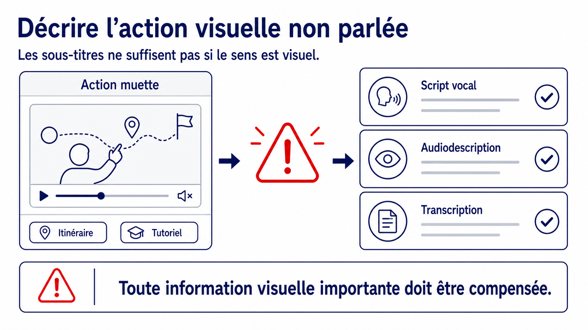
La slide montre une action importante uniquement visuelle, puis trois compensations possibles : script vocal, audiodescription et transcription.
Textes visibles
- Décrire l'action visuelle non parlée
- Les sous-titres ne suffisent pas si le sens est visuel.
- Action muette
- Itinéraire
- Tutoriel
- Script vocal
- Audiodescription
- Transcription
- Toute information visuelle importante doit être compensée.
Message à retenir
Si une vidéo montre une information importante sans la dire, cette information doit être compensée par une piste audio ou une transcription.
Slide 33 - Sécuriser la lecture vidéo
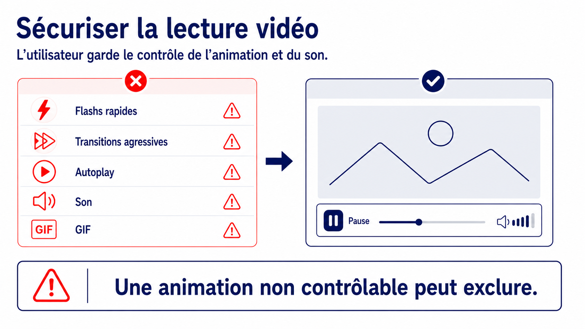
La slide compare une vidéo risquée, avec flashs rapides, transitions agressives, autoplay, son et GIF, à une lecture contrôlée avec pause.
Textes visibles
- Sécuriser la lecture vidéo
- L'utilisateur garde le contrôle de l'animation et du son.
- Flashs rapides
- Transitions agressives
- Autoplay
- Son
- Pause
- GIF
- Une animation non contrôlable peut exclure.
Message à retenir
Les contenus animés doivent éviter les flashs rapides, les transitions agressives et les lectures automatiques imprévisibles.
Slide 34 - Alléger la charge cognitive
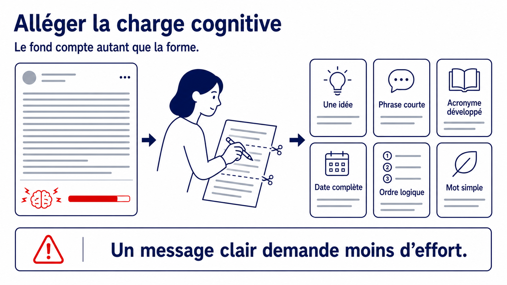
La slide montre un post dense relu puis découpé en règles de langage clair : une idée, phrase courte, acronyme développé, date complète, ordre logique et mot simple.
Textes visibles
- Alléger la charge cognitive
- Le fond compte autant que la forme.
- Une idée
- Phrase courte
- Acronyme développé
- Date complète
- Ordre logique
- Mot simple
- Un message clair demande moins d'effort.
Message à retenir
Le langage clair réduit l'effort de compréhension : une idée par phrase, acronymes développés, dates complètes et ordre logique.
Slide 35 - Distinguer langage clair et FALC
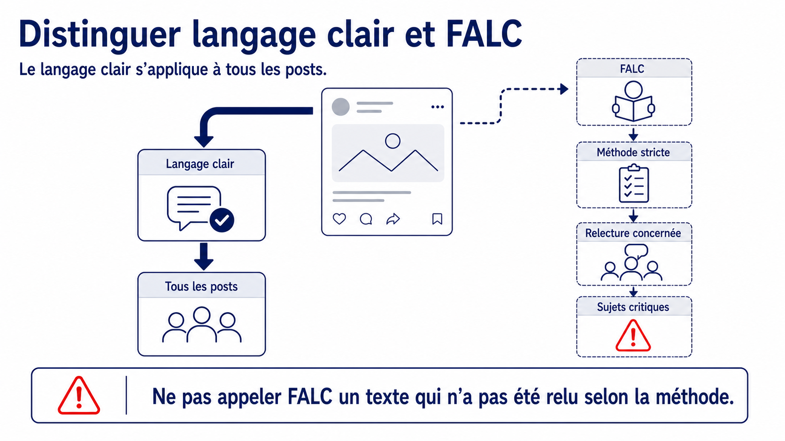
La slide compare deux parcours éditoriaux. Le langage clair s'applique à tous les posts, tandis que le FALC suit une méthode stricte avec relecture concernée et sujets critiques.
Textes visibles
- Distinguer langage clair et FALC
- Le langage clair s'applique à tous les posts.
- Langage clair
- Tous les posts
- FALC
- Méthode stricte
- Relecture concernée
- Sujets critiques
- Ne pas appeler FALC un texte qui n'a pas été relu selon la méthode.
Message à retenir
Le FALC n'est pas un simple texte simplifié : c'est une méthode stricte avec relecture par les personnes concernées.
Slide 36 - Corriger après publication
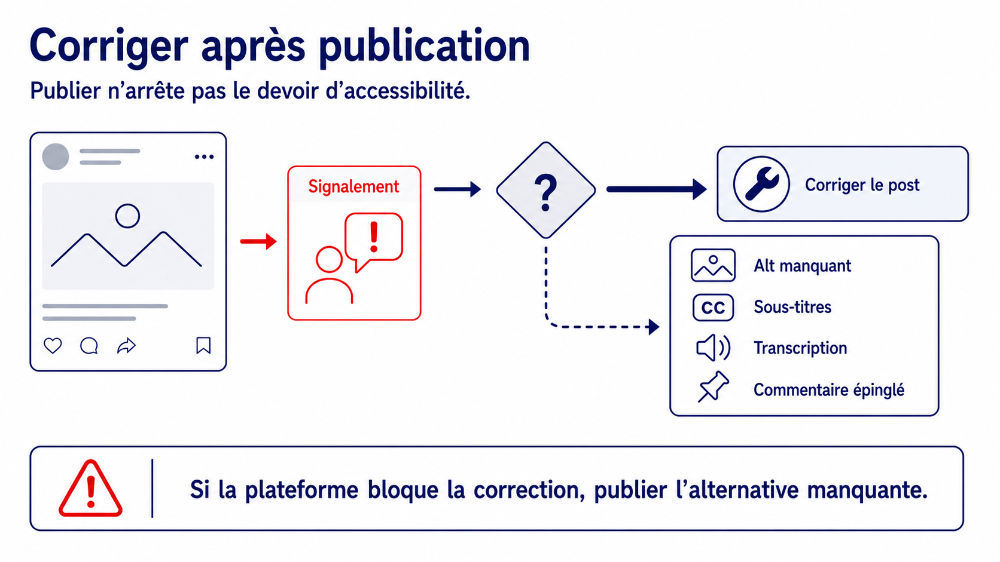
La slide montre un signalement après publication. Le parcours prioritaire mène à la correction du post ; si la plateforme bloque cette correction, les alternatives manquantes sont publiées et épinglées en commentaire.
Textes visibles
- Corriger après publication
- Publier n'arrête pas le devoir d'accessibilité.
- Signalement
- Corriger le post
- Alt manquant
- Sous-titres
- Transcription
- Commentaire épinglé
- Si la plateforme bloque la correction, publier l'alternative manquante.
Message à retenir
Après publication, un défaut signalé doit être corrigé dans le post quand c'est possible, ou réparé par une alternative publiée et épinglée.
Slide 37 - Mesurer les vrais KPI d'accessibilité
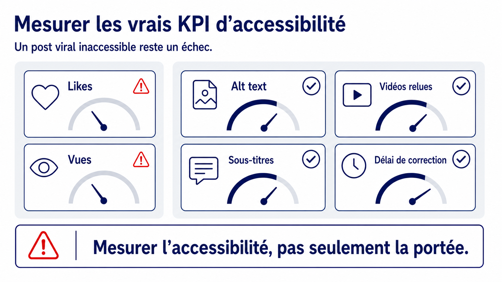
La slide compare les métriques de portée seules, comme likes et vues, avec des indicateurs d'accessibilité : alt text, vidéos relues, sous-titres et délai de correction.
Textes visibles
- Mesurer les vrais KPI d'accessibilité
- Un post viral inaccessible reste un échec.
- Likes
- Vues
- Alt text
- Vidéos relues
- Sous-titres
- Délai de correction
- Mesurer l'accessibilité, pas seulement la portée.
Message à retenir
La réussite d'une publication doit intégrer des KPI d'accessibilité, pas seulement les likes, les vues ou la viralité.
Slide 38 - Produire accessible, c'est produire mieux
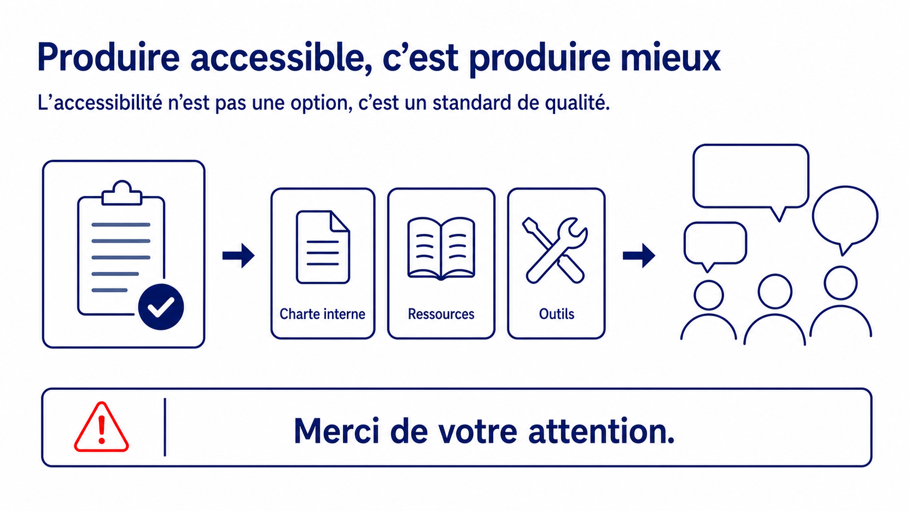
La slide de conclusion reprend le masque précédent : un brief validé mène vers trois ressources internes, puis vers un échange visuel sans texte ajouté.
Textes visibles
- Produire accessible, c'est produire mieux
- L'accessibilité n'est pas une option, c'est un standard de qualité.
- Charte interne
- Ressources
- Outils
- Merci de votre attention.
Message à retenir
Produire accessible revient à produire mieux : l'équipe dispose maintenant d'une méthode, de ressources et d'outils pour continuer.